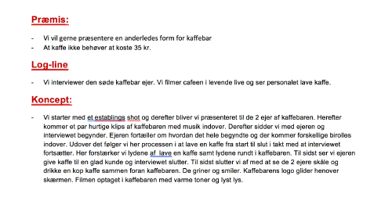
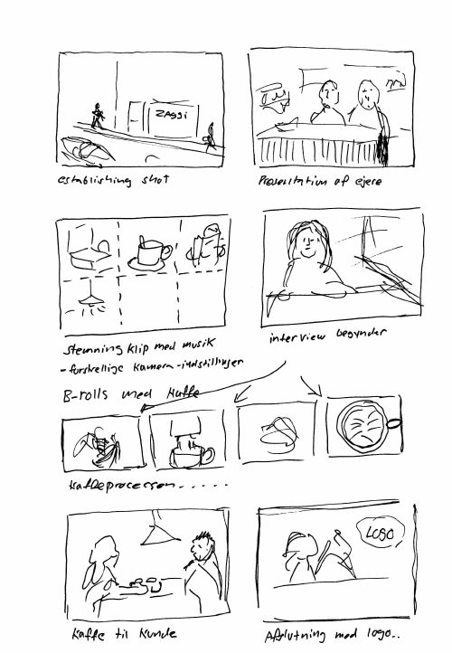
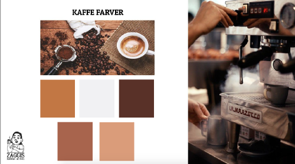
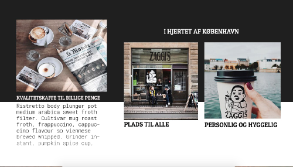
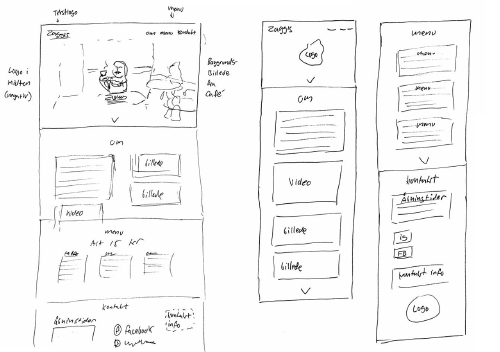

Portfolio / Virksomhedsvideo + website redesign
Tema 3, Grundlæggende video
Introduktion
Den første del af dette gruppeprojekt består af en virksomhedsvideo, som er produceret til kunden - Zaggis Kaffebar i KBH. Vi har udviklet interviewguide, synopsis, storyboard, m.m. samt et koncept for vinkling af budskabet, så videoenen får den ønskede "feel". Dere efter er videoen skudt hos kunden, og redigeret i Adobe Premiere Pro.
Anden del af projektet er et redesign af deres eksisterende website. På baggrund af bl.a. en designanalyse og BERT-test bliver et nyt webdesign fremstillet og kodet. Vores mål var et mere enkelt design, med et mere personligt præg - i forhold caféen - så det ikke ligner en site-skabelon med stockphotos. Og desuden at få budskabet om (billig) kvalietskaffe til folket, ud.
Emner:
- Interview
- Filmoptagelse
- Lys/lyd
- Redigering i Premiere Pro
- Dramaturgi
- Analyser af website
- Redesign af website
- Responsiv HTML/CSS-kodning
Synopsis & Storyboard

03.02.01 Synopsis

03.02.01 Storyboard
Færdig video
03.02.02 Virksomhedsvideo på youtube
Styletile

03.02.01 Gruppens styletile

03.02.01 Gruppens styletile
Layout/wireframe-skitse
